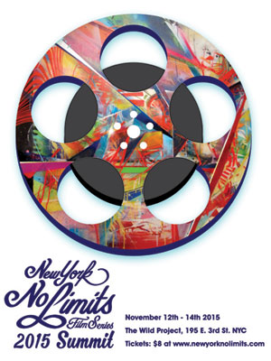

past performance |
|||
|
New York No Limits Film Series 2015 SUMMIT showtimes:November 12-14 The schedule is as follows: November 12th 7:30PM |
 | ||
|
November 13th 7:00PM 9:00PM November 14th 5:00PM 7:30PM 9:00PM At the conclusion of the Summit NYNL will announce the winner of Best Feature Film and Best Short Film as chosen by a jury of peers. 2015 jurors: Florence Buchanan (RIGHT THERE 2013 Best Of), Rich Devaney (2014 Best Short film PATROL), Matthew Glasson, Aaron Douglas Johnston (2013 Special Jury Prize MY SISTER'S QUINCEANERA) & Daniel Stine (Short film selection GOD AND VODKA 2011 & THE CHAMPIONSHIP ROUNDS 2013). New York No Limits Film Series launched in November 2010 as a short film series and later added feature films to its lineup. NYNL film series seeks to program films that reflect the essence of the filmmaker’s vision. The films are daring in nature and imbued with stories that cross the line of commercial intent. |
|||
upcoming performances |
|||
 |
|||
| EVQ Film Festival 2018 August 20-25 |
|||
performance archives |
|||
| 2018 | 2017 | 2016 | 2015 |
| 2014 | 2013 | 2012 | 2011 |
| 2010 | 2009 | 2008 | 2007 |